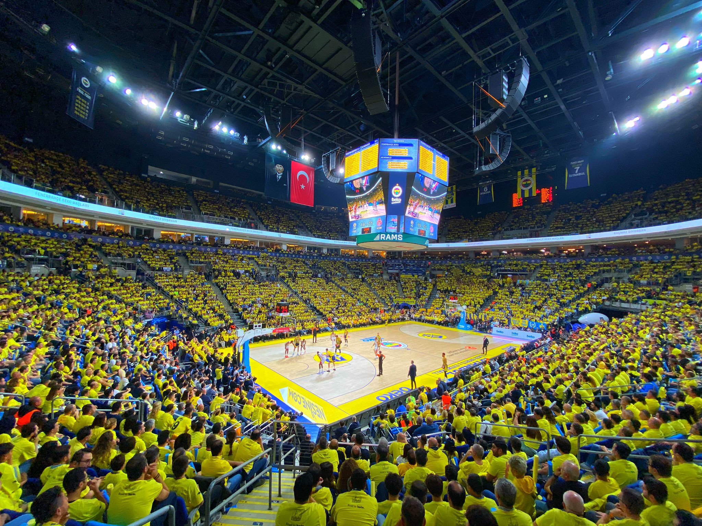

Turkish Airlines EuroLeague'deki temsilcimiz Fenerbahçe Beko, Play-Off serisinin üçüncü maçında
sahasında Monaco'yu ağırladı. Sarı-lacivertliler, karşılaşma öncesi Ülker Salonu'nda muhteşem bir
gösteriye imza attı.
Formula 1 temalı müthiş bir koreografi büyük beğeni topladı.
AVANTAJI KAPTI
THY EuroLeague play-off çeyrek final serisi üçüncü karşılaşmasında Fenerbahçe Beko sahasında
ağırladığı Monaco'yu 89-78.
Üç galibiyet alan ekibin Dörtlü Final'e kalacağı çeyrek final etabında Fransa'da oynanan 2
karşılaşmadan ilkini Fenerbahçe Beko 95-91 kazanarak seride 1-0 öne geçmişti. İkinci karşılaşmada
ise Monaco 93-88'lik skorla galip gelerek durumu 1-1'e getirmişti. Temsilcimiz bugün aldığı son
galibiyetle durumu 2-1'e getirdi ve avantajı kaptı.
Çeyrek final etabının dördüncü maçı 3 Mayıs Cuma günü yine İstanbul'da yapılacak.
